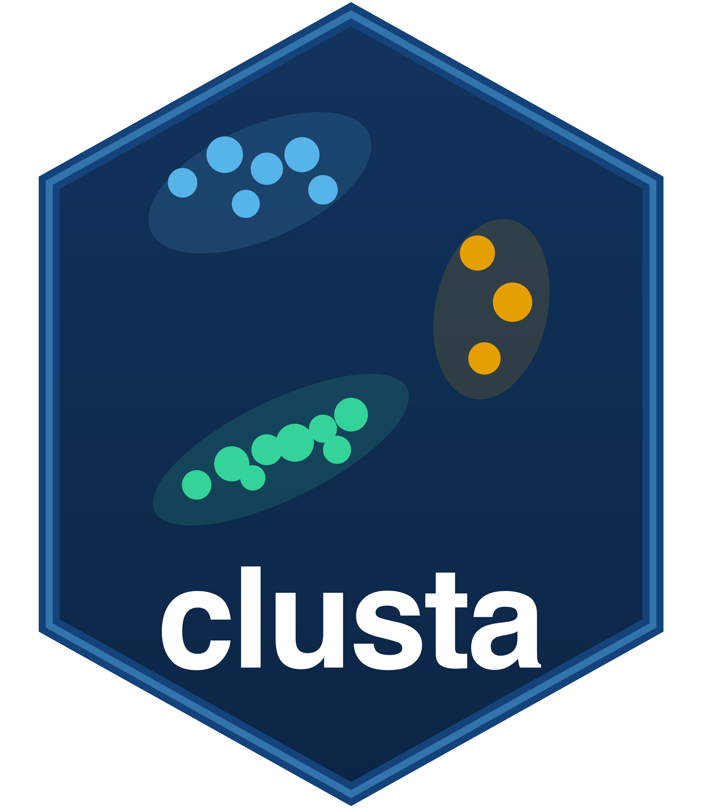

clusta 1.0-1
From ordered data to non-convex clusters

clusta 1.0-1
Clustering often begins with a simple question: which observations belong together? The answer becomes less simple when groups form rings, crescents, spirals, or ordered segments. A single method is rarely suitable for all of these settings.
We developed clusta to bring several related clustering tools into one R package. The common idea is to use dynamic programming when observations can be represented on an ordered axis. On that axis, the package can search all valid contiguous partitions and find the best boundary placement for the chosen objective. For multivariate data, clusta provides several ways to construct or use such an ordering.
The package’s main multivariate method is S-MPDP, short for Spectral Mathematical Programming Dynamic Programming clustering. S-MPDP uses a neighbourhood graph to unfold complex cluster shapes into a one-dimensional signal. It then fits a distribution to that signal and places cluster boundaries by dynamic programming.
This article gives a practical tour of version 1.0-1. It begins with the simplest one-variable problem, moves to non-convex multivariate data, and ends with diagnostics, benchmarking, data, figures, and the Shiny app.
The package is currently distributed as a source package while its CRAN submission is being completed. The CRAN installation command and permanent CRAN link will be added here after acceptance.
Install and load the package
Place the source tarball in your working directory and run:
install.packages("clusta_1.0-1.tar.gz", repos = NULL, type = "source")
library(clusta)The core package uses fitdistrplus. Other packages are suggested rather than required. They add the Shiny app, ggplot2 figures, some validation measures, additional benchmark methods, and the optional FitVerse distribution engine.
# Optional tools used in later sections
install.packages(c(
"shiny", "bslib", "ggplot2", "DT", "cluster", "clue",
"mclust", "dbscan", "mlbench"
))You can see the package guides at any time:
vignette("clusta", package = "clusta")
vignette("smpdp", package = "clusta")
help(package = "clusta")Start with one variable
Suppose the data contain three groups along a single measured variable. Here the natural clusters are contiguous intervals. The default wcss method finds the partition that minimises the total within-cluster sum of squares.
set.seed(123)
x <- c(
rnorm(60, mean = 0, sd = 0.8),
rnorm(60, mean = 6, sd = 1.0),
rnorm(60, mean = 13, sd = 1.2)
)
fit_1d <- clusta(x, k = 3)
fit_1d
summary(fit_1d)
plot(fit_1d)For one variable, the dynamic program searches the complete set of contiguous three-group partitions. The result is therefore the global minimum of the stated WCSS problem. The printed object reports cluster sizes, centres, WCSS, BIC, silhouette width, and the optimality statement.
head(fit_1d$cluster)
fit_1d$boundaries
fit_1d$tot.withinss
fit_1d$gap_pctgap_pct = 0 certifies a global optimum for the WCSS problem. A nonzero value is a certified upper bound based on the package’s lower bound. It can be conservative.
One interface, nine methods
The clusta() function gives access to nine methods. If method is omitted, the package uses wcss for one variable and projection for multivariate data.
wcss
Finds the globally optimal contiguous partition under within-cluster sum of squares.
projection
Uses PC1, a supplied direction, or a supplied score. It then solves the one-dimensional WCSS problem exactly on that score.
estvar
Uses an exact dynamic program on one variable or a projection score. Objectives include Neyman, Gaussian, and WCSS costs.
parametric
Fits a distribution by AIC and places model-based boundaries by dynamic programming on a numerical grid.
spectral
Runs S-MPDP. A spectral graph representation is compressed to one signal, then partitioned by the distribution-aware dynamic program.
exact2d
For exactly two variables and k = 2. It enumerates separating directions and certifies the full-space WCSS optimum.
sweep
Searches separating directions for any k. It is global for k = 2 and finds the best parallel-line partition for k greater than 2.
sequence
Finds the exact multivariate segmentation along a known order, such as time, distance, or a transect.
graph
Builds a Euclidean minimum spanning tree and removes edges greedily to reduce WCSS. It is a useful heuristic, not an exact graph partition.
These methods do not make the same optimality claim. For example, projection is exact after the projection has been chosen, not in the original multivariate space. S-MPDP is exact for its Stage 2 boundary problem on the fitted one-dimensional signal, not for every possible partition of the original data. Keeping this distinction clear is important when reporting results.
Projection for several variables
fit_iris <- clusta(
iris[, 1:4],
k = 3,
method = "projection",
scale = TRUE
)
fit_iris
plot(fit_iris)You may supply your own direction or score when the scientific problem already provides a meaningful order.
fit_direction <- clusta(
iris[, 1:4],
k = 3,
method = "projection",
direction = c(1, 0, 0, 0)
)Distribution-aware boundaries
The parametric method first fits a distribution to the variable or projection score. The default engine compares Normal, Log-Normal, Gamma, Weibull, and Exponential families when their supports are suitable. It selects by AIC and places boundaries by minimising the fitted model’s total \(W_hS_h\) cost on a numerical grid.
set.seed(321)
y <- c(rgamma(120, shape = 2, rate = 1),
rgamma(80, shape = 7, rate = 0.8))
fit_parametric <- clusta(y, k = 3, method = "parametric")
fit_parametric$distr
fit_parametric$fit_params
plot(fit_parametric)If the optional FitVerse package is installed, fit_engine = "fitverse" searches its larger family collection. fit_engine = "best" tries both engines and keeps the boundary set with the lower empirical \(W_hS_h\) value.
fit_wide <- clusta(
y,
k = 3,
method = "parametric",
fit_engine = "fitverse",
fit_dists = "all"
)S-MPDP for non-convex clusters
K-means is useful when groups are compact and roughly spherical. It is poorly matched to two moons, concentric rings, or intertwined spirals because those groups cannot be separated well by nearest-centre regions. S-MPDP takes a different route.
1. Build a local graph
Construct a locally scaled k-nearest-neighbour graph. The default mutual rule keeps an edge only when each point selects the other.
2. Unfold the data
Use the normalised Laplacian, its leading eigenvectors, row normalisation, and PCA to produce one ordered signal.
3. Fit the signal
Compare candidate distributions by AIC and retain the best supported model for the spectral signal.
4. Place boundaries
Use dynamic programming to select the Stage 2 boundaries and map the resulting labels back to the original observations.
A two-moons example
moons <- gen_two_moons(n = 500)
X <- moons[, c("x", "y")]
smpdp_fit <- spectral_mpdp(
X,
h = 2,
k_neighbors = 15,
mutual = TRUE
)
smpdp_fit
summary(smpdp_fit)The dedicated spectral_mpdp() interface returns an object of class smpdp. Its main table contains the original features, the spectral score, the assigned cluster, and an assignment-confidence value.
head(smpdp_fit$cluster_results)
table(smpdp_fit$cluster_results$cluster)The same method is also available through the common interface:
fit_common <- clusta(
X,
k = 2,
method = "spectral",
k_neighbors = 15
)Use spectral_mpdp() when you want all six S-MPDP figures and the Stage 1 and Stage 2 details. Use clusta(..., method = "spectral") when you want the common clusta object and its S3 methods.
Read the graph checks
k_neighbors is the main S-MPDP tuning setting. Small values keep the graph local, but may leave isolated points or too many connected components. Large values connect more of the data, but can blur local geometry.
Every S-MPDP result reports the number of graph components and isolated observations. Treat a connectivity warning as part of the analysis. It usually means that k_neighbors should be increased, or that the union graph should be examined with mutual = FALSE.
union_fit <- spectral_mpdp(X, h = 2, k_neighbors = 15, mutual = FALSE)The mutual and union rules answer slightly different graph questions. It is better to report which rule was used than to switch between them without explanation.
Six views of an S-MPDP result
The package provides six matching base R and ggplot2 views.
plot(smpdp_fit, "clusters")
plot(smpdp_fit, "signal")
plot(smpdp_fit, "confidence")
plot(smpdp_fit, "eigengap")
plot(smpdp_fit, "similarity")
plot(smpdp_fit, "profile")The cluster map uses the two original variables when there are exactly two. For higher-dimensional data, it displays the first two principal components. The signal plot shows where Stage 2 placed the boundaries. The confidence plot highlights observations close to a boundary. The similarity plot helps you inspect graph block structure, while the profile plot compares standardised feature means across clusters.
ggplot2::autoplot(smpdp_fit, "clusters")
ggplot2::autoplot(smpdp_fit, "signal")
ggplot2::autoplot(smpdp_fit, "profile")For an ordinary clusta object, use plot() for base graphics or fviz_clusta() for a ggplot2 figure.
plot(fit_iris, "clusters")
plot(fit_iris, "silhouette")
fviz_clusta(fit_iris, type = "clusters")Choosing the number of clusters
Spectral eigengap guide
suggest_k() examines the graph spectrum. It is a guide rather than a formal decision rule.
k_guide <- suggest_k(X, k_neighbors = 15, k_max = 8)
k_guide
plot(k_guide)Diagnostic scan over k
clusta_elbow() fits a selected method over a range of cluster counts. It returns WCSS, BIC, average silhouette width, and the available optimality-gap value.
k_scan <- clusta_elbow(x, k_range = 1:8, method = "wcss")Look for agreement among the graph spectrum, WCSS elbow, BIC, silhouette, scientific knowledge, and cluster interpretability. A single index should not decide the analysis on its own.
Sensitivity and bootstrap stability
Sensitivity to h and k_neighbors
The results should not depend on one unexamined tuning choice. smpdp_sensitivity() runs a grid of neighbourhood sizes and cluster counts. With known labels it reports ARI and NMI as well as silhouette. Without labels it uses silhouette for the printed summary.
sensitivity <- smpdp_sensitivity(
X,
truth = moons$class,
k_grid = c(8, 10, 15, 20, 30),
h_grid = 2:4,
mutual = TRUE,
seed = 12345
)
sensitivity
plot(sensitivity, metric = "ARI")Bootstrap Jaccard stability
cluster_stability() resamples the observations, refits S-MPDP, and matches each original cluster to the closest bootstrap cluster by Jaccard overlap.
stability <- cluster_stability(
X,
h = 2,
k_neighbors = 15,
B = 25,
seed = 12345
)
stability
plot(stability)The function reports a score for each cluster and an overall mean. A high mean is reassuring, but it does not replace inspection of individual clusters. A single weak cluster can be hidden by a good overall average.
Evaluate a clustering
cluster_metrics() accepts the feature matrix, optional true labels, and predicted labels. It returns eight measures in a fixed order.
pred <- smpdp_fit$cluster_results$cluster
scores <- cluster_metrics(X, true_labels = moons$class, pred_labels = pred)
scores| Measure | Interpretation | Preferred direction |
|---|---|---|
| ARI | Agreement with known classes, adjusted for chance | Larger |
| NMI | Shared information between classes and clusters | Larger |
| Silhouette | Cohesion and separation in feature space | Larger |
| Purity | Majority-class share within clusters | Larger |
| Accuracy | Best one-to-one matching of clusters and classes | Larger |
| CH | Between-cluster to within-cluster dispersion | Larger |
| DB | Within-cluster spread relative to separation | Smaller |
| Dunn | Minimum separation relative to maximum cluster diameter | Larger |
ARI, NMI, purity, and accuracy require known labels. Silhouette, CH, DB, and Dunn use the feature matrix. Silhouette needs the optional cluster package, and accuracy needs clue. Pairwise-distance measures can be expensive on large data, so you can request only the metrics needed.
cluster_metrics(
X,
true_labels = NULL,
pred_labels = pred,
metrics = c("Silhouette", "CH", "DB")
)When labels are available, keep them out of the clustering feature matrix. They are for evaluation, not fitting.
Compare methods fairly
run_clustering_benchmarks() returns labels from a selected set of methods on the same feature matrix. Available choices are S-MPDP, K-Means, conventional spectral clustering, HDBSCAN, agglomerative clustering, and optional multi-level spectral clustering through sClust.
predictions <- run_clustering_benchmarks(
X,
L = 2,
k_neb = 15,
mutual = TRUE,
seed = 12345,
methods = c("S-MPDP", "K-Means", "Spectral", "Agglomerative")
)
comparison <- t(vapply(
predictions,
function(z) cluster_metrics(X, moons$class, z),
numeric(8)
))
round(comparison, 3)HDBSCAN requires dbscan. MSC requires sClust. Optional methods are skipped with a warning when their packages are not installed. HDBSCAN may return noise points, and MSC may return a different final number of groups from the requested maximum. Both facts should be considered when comparing results.
For a study with several datasets, put one score matrix together with datasets in rows and methods in columns. friedman_ranks() ranks the methods within each dataset and reports the Friedman and Iman-Davenport tests.
ari_by_dataset <- rbind(
data_A = c(`S-MPDP` = 0.86, `K-Means` = 0.51, Spectral = 0.80),
data_B = c(`S-MPDP` = 0.72, `K-Means` = 0.68, Spectral = 0.70),
data_C = c(`S-MPDP` = 0.91, `K-Means` = 0.75, Spectral = 0.84)
)
ranks <- friedman_ranks(ari_by_dataset, higher_better = TRUE)
ranks
plot(ranks)Data included with clusta
The package contains seven real benchmark datasets and three additional worked or simulated datasets.
glass
214 observations, 9 features, and 6 glass classes.
breast_cancer
569 observations, 30 diagnostic features, and 2 classes.
raisin
900 observations, 7 morphological features, and 2 classes.
rice
3,810 observations, 7 shape features, and 2 classes.
ceramic
88 observations, 17 chemical features, and 2 archaeological groups.
image_segmentation
2,310 observations, 19 image features, and 7 classes.
waveform
5,000 observations, 21 features, and 3 classes.
v_shape
A stored two-dimensional V-shaped benchmark.
cassini
A stored two-dimensional Cassini benchmark with 3 classes.
smpdp_toy
A small worked dataset for learning the S-MPDP workflow.
A typical labelled dataset has numeric feature columns and a separate class column.
data(ceramic)
X_ceramic <- ceramic[, setdiff(names(ceramic), "class")]
y_ceramic <- ceramic$class
ceramic_fit <- spectral_mpdp(X_ceramic, h = 2, k_neighbors = 41)
cluster_metrics(X_ceramic, y_ceramic, ceramic_fit$cluster_results$cluster)Six generators make it easy to explore non-convex shapes and to test code at different sample sizes.
two_moons <- gen_two_moons(n = 500)
v_data <- gen_v_shape(n = 400)
circles <- gen_concentric_circles(n = 1500)
smiley <- gen_smiley(n = 400)
spirals <- gen_three_spirals(n = 900, noise = 0.02, cycles = 1.4)
cassini_sim <- gen_cassini(n = 2000)Each generator returns x, y, and class. The random seed is set inside the generator so that the same call is reproducible.
Work with the returned objects
The clusta class follows familiar R conventions.
print(fit) overall result, centres, fit measures, and optimality informationsummary(fit) one row per cluster with size, proportion, WCSS, silhouette, and centresplot(fit) cluster or silhouette figure in base Rfitted(fit) fitted centre for every observationpredict(fit, newdata) new labels, using the exact separating line for exact2d and nearest centres otherwisefviz_clusta(fit) a ggplot2 cluster or silhouette figure
names(fit_iris)
fit_iris$cluster
fit_iris$centers
fit_iris$size
fit_iris$withinss
fit_iris$tot.withinss
fit_iris$bic
fit_iris$avg.silwidth
fit_iris$direction
fit_iris$var_explainedDirect access is useful for reports and tables, but print() and summary() are the safer starting points because they explain the method-specific result.
Explore the package in the Shiny app
The app is included inside the installed package. Install its optional interface packages once, then launch it with:
install.packages(c("shiny", "bslib", "ggplot2", "DT"))
shiny::runApp(system.file("app", package = "clusta"))The app is designed as an analysis path rather than a gallery. A useful first run is:
- Choose a built-in dataset, such as Ceramic, Two moons, or Waveform.
- Check the supplied starting values for the number of clusters and neighbourhood size.
- Choose the mutual or union graph rule.
- Decide whether to compare baseline methods.
- Click Run clustering.
- Read the overview and graph-health message before moving to the figures.
- Inspect the cluster map, spectral signal, confidence, eigengap, similarity matrix, and cluster profiles.
- Use the stability, bootstrap, PCA, and dynamic-programming panels when they answer your analysis question.
- Export the assignments, metrics, figures, or generated R code.
The benchmark comparison uses the same Run clustering button. There is no separate benchmark button. The selected baseline methods and metrics are applied when the main analysis runs.
Built-in app examples
The app includes Iris, all seven real package datasets, and six simulated shapes. Each built-in choice supplies a tested starting value for h and k_neighbors. For example, Waveform starts with three clusters and k_neighbors = 50.
For large built-in datasets, baseline comparisons are turned off automatically because dense spectral methods and pairwise-distance metrics can take time and memory. You can turn them back on when the comparison is needed.
Upload your own CSV
When uploading a CSV file:
- Select the numeric feature columns.
- If known labels are present, select the label column separately.
- Decide whether to standardise the features.
- Check that
k_neighborsis smaller than the number of observations. - Run the analysis and read any graph-connectivity warning.
The selected label column is removed from the clustering features, even when the labels are numeric. This prevents the true answer from leaking into the fit. Constant features remain available to the clustering method, but the app omits them from standardised PCA calculations because they have zero variance.
The R code tab is especially useful. It writes a reproducible script that reflects the current controls, so an app analysis can be rerun at the console and shared with collaborators.
A careful analysis workflow
A reliable clustering analysis needs more than a single fitted object. The following sequence works well for many applications:
- Clean the feature matrix and deal with missing values before fitting.
- Keep known labels separate from the features.
- Standardise when variables are measured on very different scales, unless the original scale has a scientific meaning that should be preserved.
- Choose a method that matches the structure of the problem.
- For S-MPDP, inspect graph components and isolated points.
- Study more than one value of
handk_neighbors. - Examine the cluster map, signal, confidence, and profiles together.
- Report both internal and external metrics when labels exist.
- Check bootstrap stability.
- Compare with credible baseline methods.
- Save the settings, seed, package version, and exported R code.
This does not guarantee that every cluster is scientifically meaningful. It makes the reasoning visible and the result reproducible.
What the package does not claim
clusta gives exact solutions in several clearly defined settings, but it does not turn every multivariate clustering problem into a global optimisation result.
wcssis globally optimal for a contiguous partition of one variable.projectionand multivariateestvarare exact on the chosen one-dimensional score.parametricis optimal on its fitted-model grid for the chosen Stage 2 objective.exact2dcertifies the two-cluster WCSS optimum for exactly two variables.sweepis global for two clusters and otherwise searches partitions separated by parallel lines.sequenceis exact along the supplied order.graphis a minimum-spanning-tree heuristic built from Euclidean feature distances. Version 1.0-1 does not use a custom spatial adjacency matrix.- S-MPDP is exact for Stage 2 boundary placement on the fitted spectral signal. It does not claim the global optimum over all partitions of the original multivariate space.
These limits tell the reader exactly what was optimised and help another researcher reproduce the analysis.
Quick reference
| Task | Function |
|---|---|
| Use the common nine-method interface | clusta(data, k, method) |
| Run S-MPDP directly | spectral_mpdp(data, h, k_neighbors) |
| Run distribution-aware DP on one variable | mpdp(data, h) |
| Compare clusta with k-means | clusta_compare(data, k) |
| Scan candidate cluster counts | clusta_elbow(data, k_range) |
| Obtain an eigengap guide | suggest_k(data, k_neighbors, k_max) |
| Check bootstrap stability | cluster_stability(data, h, k_neighbors, B) |
| Study neighbourhood and cluster-count sensitivity | smpdp_sensitivity(data, truth, k_grid, h_grid) |
| Compute eight validation measures | cluster_metrics(X, true_labels, pred_labels) |
| Run selected comparison methods | run_clustering_benchmarks(X, L, k_neb) |
| Compare method ranks across datasets | friedman_ranks(scores) |
| Draw a ggplot2 figure for a clusta object | fviz_clusta(object) |
| Launch the app | shiny::runApp(system.file("app", package = "clusta")) |